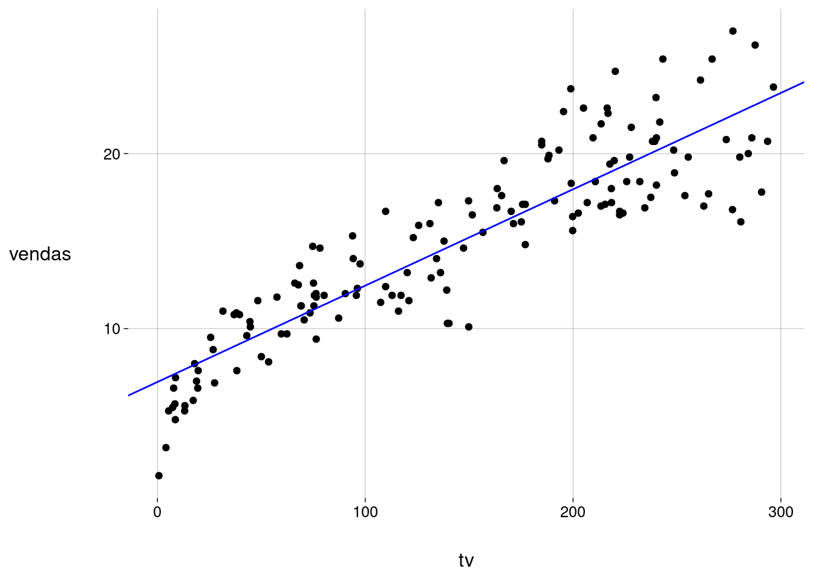
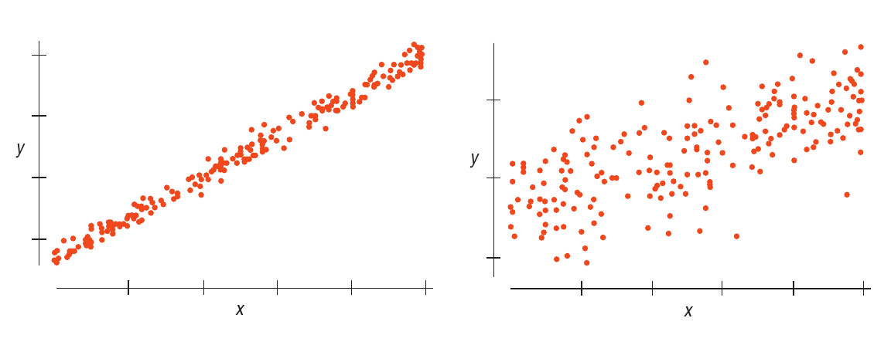
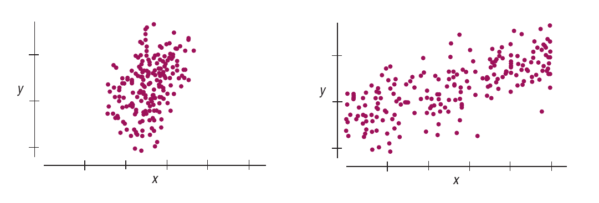
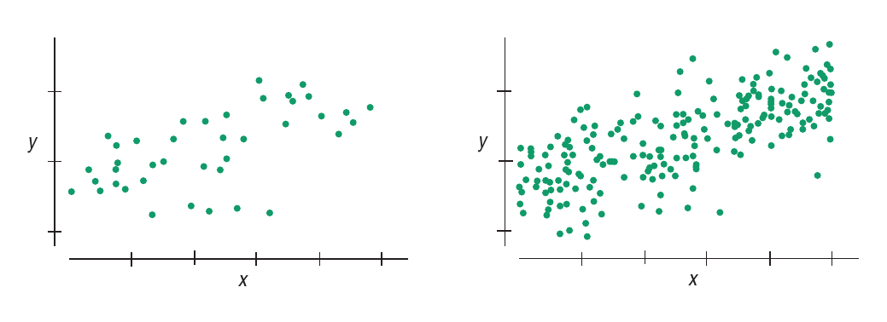

publicidade <- read_csv(
'dados/advertising.csv',
show_col_types = FALSE
) %>%
janitor::clean_names() %>%
rename(
jornal = newspaper,
vendas = sales
)
publicidade1 Regressão linear simples
% reais % seno
% vetor
% vetor e_i
% blade
% reverso (til em cima) \providecommand{}[1]{#1^{~}} % reverso (til à direita) % contração à esq % contração à dir % grau
% inverso
% dual
% undual
% projeção
1.1 Exemplo: vendas e publicidade
Exemplo baseado no livro James et al. (2021), com dados obtidos de https://www.kaggle.com/datasets/ashydv/advertising-dataset/data.
Este conjunto de dados contém \(4\) colunas:
-
tv: verba (em milhares de dólares) gasta em publicidade na TV; -
radio: verba (em milhares de dólares) gasta em publicidade no rádio; -
jornal: verba (em milhares de dólares) gasta em publicidade em jornais; -
vendas: receita das vendas (em milhares de dólares).
Cada observação — isto é, cada linha — corresponde a um produto.
Leitura e limpeza
Divisão em dados de treino e teste
split <- initial_split(publicidade)
treino <- training(split)
teste <- testing(split)
split<Training/Testing/Total>
<150/50/200>Vendas por verba gasta em TV
Análise exploratória
Começamos visualizando os dados:
grafico <- treino %>%
ggplot(aes(tv, vendas)) +
geom_point()
grafico
A correlação linear entre vendas e tv é
cor(treino$vendas, treino$tv)[1] 0,8919795Modelo linear
Call:
lm(formula = vendas ~ tv, data = treino)
Residuals:
Min 1Q Median 3Q Max
-6,0968 -1,5960 -0,0152 1,6301 5,2086
Coefficients:
Estimate Std. Error t value Pr(>|t|)
(Intercept) 7,185427 0,373754 19,23 <0,0000000000000002 ***
tv 0,053478 0,002228 24,00 <0,0000000000000002 ***
---
Signif. codes: 0 '***' 0,001 '**' 0,01 '*' 0,05 '.' 0,1 ' ' 1
Residual standard error: 2,289 on 148 degrees of freedom
Multiple R-squared: 0,7956, Adjusted R-squared: 0,7942
F-statistic: 576,2 on 1 and 148 DF, p-value: < 0,00000000000000022modelo_tidy <- tidy(modelo)
modelo_tidyb0 <- modelo_tidy$estimate[1]
b1 <- modelo_tidy$estimate[2]grafico +
geom_abline(
intercept = b0,
slope = b1,
color = 'blue'
)
A equação da reta é
\[ \begin{aligned} \widehat{\text{vendas}} &= \hat{\beta_0} + \hat{\beta_1} \cdot \text{tv} \\ &= 7{,}19 + 0{,}05 \cdot \text{tv} \end{aligned} \]
1.2 Teoria
Estimativas \(\hat{\beta_0}\) e \(\hat{\beta_1}\)
Os valores achados são estimativas para \(\beta_0\) e \(\beta_1\), baseadas nos dados do conjunto de treino.
Por isso, os valores de vendas obtidos com esta equação também são estimativas.
Vamos escrever estimativas com o acento circunflexo (chapéu) sobre os símbolos.
De onde vêm os valores de \(\hat{\beta_0}\) e \(\hat{\beta_1}\)?
Resposta: são os valores que fazem com que a soma dos quadrados das distâncias verticais dos pontos à reta seja a menor possível.
(Estas distâncias são chamadas de resíduos.)
Consulte este material para ver os detalhes sobre o cálculo de \(\hat{\beta_0}\) e \(\hat{\beta_1}\).
Erros-padrão das estimativas
Vamos pensar nas incertezas associadas aos valores de \(\hat{\beta_0}\) e \(\hat{\beta_1}\), com base na excelente discussão em (De Veaux, Velleman e Bock 2016, cap. 25).
Quais são os fatores que afetam a nossa confiança na reta de regressão?
Mais especificamente, quais os fatores que afetam nossa confiança no valor estimado \(\hat\beta_1\) (a inclinação da reta)?
Espalhamento dos pontos em volta da reta
Quanto mais afastados da reta estiverem os dados, menor a nossa confiança de que a reta captura a variação de uma variável em função da outra.
Observe a Figura 1.1. O gráfico da esquerda nos dá mais certeza de que uma reta de regressão terá uma inclinação bem próxima da taxa de variação de \(y\) em função de \(x\) na população.

Este espalhamento é medido pelo desvio-padrão dos resíduos.
No exemplo das vendas, este desvio-padrão dos resíduos é calculado como
\[ \displaystyle \sqrt{ \frac{\sum_i (\text{vendas}_i - \widehat{\text{vendas}}_i)^2}{n-2} } \]
No numerador, o valor \(\text{vendas}_i - \widehat{\text{vendas}}_i\) é o resíduo da observação \(i\).
As vendas estimadas para cada valor de tv e os valores dos resíduos podem ser acessados assim:
modelo_augment <- augment(modelo)
modelo_augment %>%
select(vendas, tv, .fitted, .resid)Calculando o desvio-padrão dos resíduos:
[1] 2,28897Este valor pode ser obtido na coluna sigma do data frame retornado pela função glance:
modelo_glance <- glance(modelo)
modelo_glance$sigma[1] 2,28897
Desvio-padrão dos resíduos
No geral, então, em uma regressão da variável \(y\) sobre a variável \(x\) com \(n\) observações, o desvio-padrão dos resíduos é
\[ \displaystyle s_{\text{residuos}} = \sqrt{ \frac{\sum_i (y_i - \widehat{y}_i)^2}{n-2} } \]
Pela Figura 1.1 e pelos comentários acima, quanto maior o valor de \(s_{\text{residuos}}\), maior a nossa incerteza.
Espalhamento de \(x\)
Quanto maior o espalhamento dos valores de \(x\), maior nossa confiança na reta de regressão, pois ela estará baseada em uma diversidade maior de valores.
Observe a Figura 1.2. O gráfico da direita tem um espalhamento maior dos valores de \(x\). Uma reta de regressão, ali, parece estar mais bem “ancorada”.

O espalhamento de \(x\) é medido pelo desvio-padrão, que é calculado da maneira usual.
No exemplo das vendas, \(s_x\), o desvio-padrão de tv é
dp_x <- modelo_augment %>%
pull(tv) %>%
sd()
dp_x[1] 84,16717
Desvio-padrão dos resíduos
Pela Figura 1.2 e pelos comentários acima, quanto maior o valor de \(s_x\), menor a nossa incerteza.
Quantidade de dados
Uma reta baseada em mais pontos é mais confiável. Observe a Figura 1.3.

Quantidade de dados
Pela Figura 1.3 e pelos comentários acima, quanto maior o valor de \(n\), menor a nossa incerteza.
Juntando tudo
Vimos que
- Quanto maior o desvio-padrão dos resíduos (\(s_{\text{residuos}}\)), maior a incerteza.
- Quanto maior o desvio-padrão da variável \(x\) (\(s_x\)), menor a incerteza.
- Quanto maior a quantidade de dados (\(n\)), menor a incerteza.
Concluímos que a incerteza sobre nossa estimativa para \(\beta_1\) (a inclinação da reta) é proporcional aos valores acima da seguinte maneira:
\[ EP(\beta_1) \propto \frac{s_{\text{residuos}}}{n \cdot s_x} \]
onde estamos escrevendo a incerteza como \(EP(\beta_1)\), o erro-padrão de \(\beta_1\).
Erro-padrão de \(\beta_1\)
A fórmula exata para a incerteza sobre \(\beta_1\) é
\[ EP(\beta_1) = \frac{s_{\text{residuos}}}{\sqrt{n - 1} \cdot s_x} \]
No exemplo das vendas, usando as variáveis que já calculamos antes, este erro-padrão é
dp_residuos / (sqrt(n - 1) * dp_x)[1] 0,002227943Este valor aparece nos resultados de lm como std.error:
modelo_tidyErro-padrão do intercepto
Erro-padrão de \(\beta_0\)
Para o intercepto \(\beta_0\), o raciocínio é análogo.
A fórmula exata para a incerteza sobre \(\beta_0\) é
\[ EP(\beta_0) = \]
??? ISLR p. 76